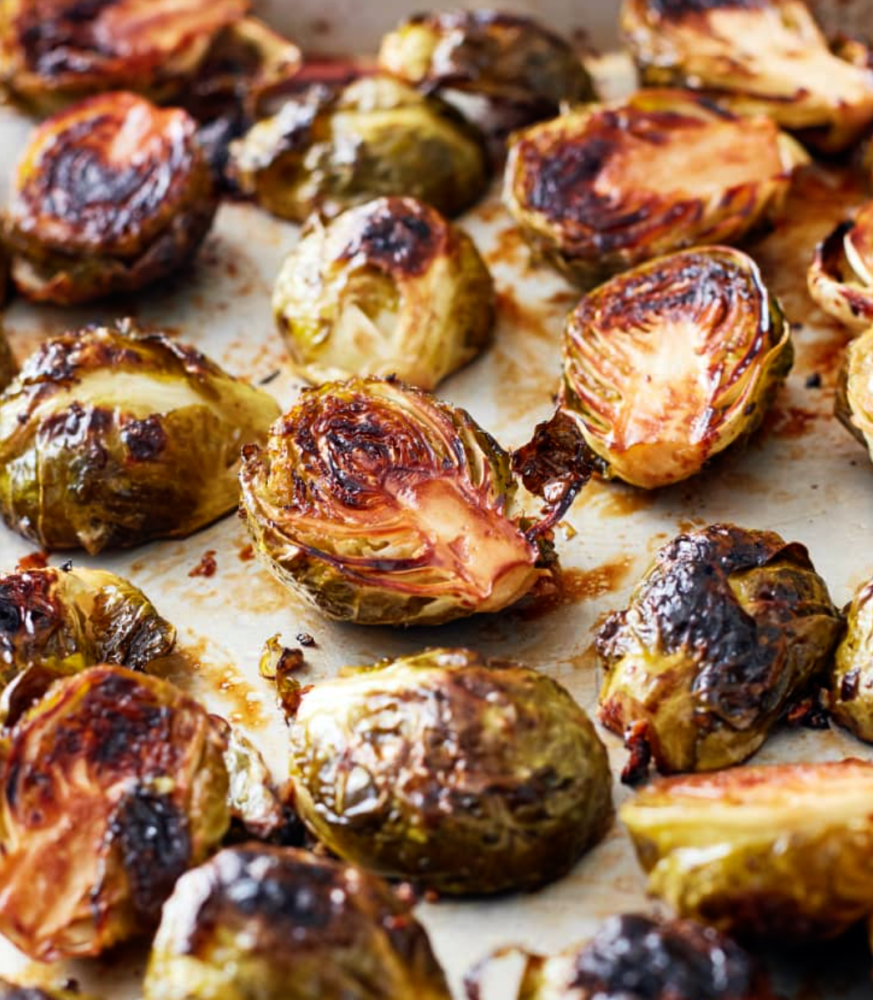

Baked Brussel Sprouts
Ingredients
- 2 pounds Brussel Sprouts
- 1/4 cup olive oil
- 1 tsp salt
- 1 tsp pepper
- 2 cloves of garlic (minced)
- 3 Tbsp butter
- 3 Tbsp balsamic vinegar
- Splash of lemon juice
- 1/3 cup parmesan cheese
How to make Baked Brussel Sprouts
- Preheat oven to 425oF.
- Trim the bottom of the sprouts and remove loose outer leaves. Cut each Brussel sprout in half.
- Place the sprouts on a rimmed and linned baking sheet. Add the olive oil and evenly coat the sprouts.
- Season the sprouts with the salt, pepper, and garlic.
- Place all sprouts cut side down.
- Place the butter sporadically on the pan.
- Place the pan in the oven on the top rack. Bake for 25-30 minutes.
- Let the sprouts cool and place them in a medium size bowl.
- Pour in the balsamic vinegar, lemon, and cheese. Mix and serve!